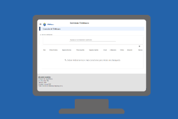
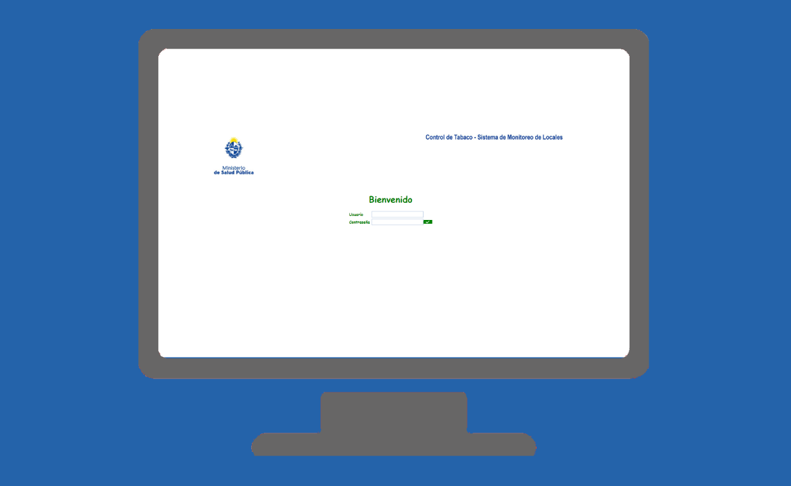
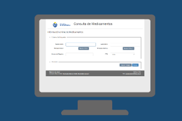
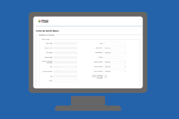

Listado de Sistemas
-
Carné Adulto Mayor
El proyecto tiene por objetivo la generación del Carné del Adulto Mayor en formato digital.
-

Compromisos de Gestión
En el sistema se registran los Planes Operativos Anuales, los Objetivos Estratégicos, los Objetivos Específicos y las Metas.
-
Directorio Telefónico
El sistema de Directorio telefónico del Ministerio de Salud Pública, permitirá la consulta de datos y ubicación física de los funcionarios que laboran dentro de la sede central y los diecinueve (19) departamentos que conforman Uruguay y los institutos adscrito al MSP
-
Historia Clínica Electrónica Nacional
El MSP al contar con sistemas que produce y es única fuente en algún caso, aporta dichos datos a la Historia Clínica Electrónica Nacional (HCEN). Además cuenta con sistemas para recepcionar información de plataforma HCEN.
-

Planificación Estratégica
El sistema informático “Planificación estratégica” tiene como objetivo el control del proceso de ingreso, validación y seguimiento de la Planificación Estratégica del Inciso 12 (Ministerio de Salud Púbica) y de su desempeño.
-

Portal de Medicamentos
Página web de acceso público que permite visualizar la información de todos los medicamentos incluidos en el Diccionario Nacional de Medicamentos y Afines.
-
RCIE – Recepción y Control de Información Externa
Es un sistema que tiene como objetivo principal recepcionar de forma segura y centralizada la información solicitada por el MSP, permitiendo un control y procesamiento automático de la misma.
-
REDCOBWEB
Sistema que permite a los ciudadanos agendarse para recibir la vacuna contra la fiebre amarilla a través de Abitab.
-

RUCAF (Registro Único de Cobertura Asistencia Formal)
El Registro Único de Cobertura de Asistencia Formal (RUCAF) es el sistema encargado de centralizar la información de la población beneficiaria de todos los servicios de salud del país.
-
SCARH (Sistema de Control y Análisis de Recursos Humanos)
El SCARH releva información de desempeño, dedicación, ocupación y costos de los recursos humanos de salud (RHS) de las Instituciones de Asistencia Médica Colectivas.
-
SGDEVISA – Notificación de Enfermedades y Eventos de Notificación Obligatoria
Sistema de gestión del Departamento de Vigilancia en Salud de la División Epidemiología para la realización de la vigilancia constante de enfermedades y/o eventos según lo establecido en el Código Nacional de Enfermedades y Eventos de Notificación Obligatoria.
-
SHARPS (Sistema de Habilitación y Registro de Profesionales de la Salud)
El SHARPS es el sistema encargado de centralizar la información de todos los profesionales de la salud registrados en el Ministerio de Salud.
-
SHARSS (Habilitación de Prestadores y Servicios de Salud)
Sistema pensado para que los ciudadanos puedan, accediendo a un “trámite en línea”, realizar cualquier tipo de denuncia, sugerencia, o agradecimiento a las diferentes instituciones de salud, sean o no prestadores integrales.
-
Sistema BLH (Banco de leche humana)
Aplicación que permite registrar y gestionar información sobre las donantes de leche humana.
-
Sistema centralizado de inspección y fiscalización
Obtener un sistema que centralice la información de todos los sectores vinculados o relacionados con tareas inspectivas o de fiscalización.
-
Sistema Control Tabaco
Es un sistema que permite el ingreso de las inspecciones que realizan los inspectores del Programa Nacional para el Control de Tabaco en todo el país.
-
Sistema de Búsqueda de Documentos
Este sistema permite el almacenamiento y búsqueda de las resoluciones y ordenanzas realizadas por las autoridades del MSP.
-
Sistema de Certificado de Defunción
El alcance del Sistema abarca el ingreso de todos los Certificados de Defunción realizados en el territorio nacional por parte de las instituciones de salud correspondiente, esto incluye los extranjeros que mueren en Uruguay.
-
Sistema de Certificado de Nacido Vivo
Sistema usado por las maternidades de los prestadores de saludo donde registran y emiten el certificado de nacido vivo. Certificado que es usado para la inscripción en DGREC
-
Sistema de Denuncias y Reclamos
Sistema pensado para que los ciudadanos puedan, accediendo a un “trámite en línea”, realizar cualquier tipo de denuncia, sugerencia, o agradecimiento a las diferentes instituciones de salud, sean o no prestadores integrales
-
Sistema de Expediente Electrónico
El Ministerio de Salud realiza el seguimiento de todos sus trámites mediante un Sistema de Expediente Electrónico.
-
Sistema de Gestión Integrado (GRP)
El MSP ha aplicado al Programa de Fortalecimiento de la Gestión Presupuestaria del MEF y es financiado en la adquisición de una solución de GRP (Government Resource Planning) cuyo objetivo es sistematizar los procesos administrativos transversales con la finalidad de modernizar e integrar la gestión presupuestal, financiera, patrimonial y de abastecimiento de activos fijos, servicios y materiales.
-
Sistema de Laboratorio
Sistema que apoya a los procesos del Laboratorio Central del MSP.
-
Sistema de Soporte de la ley de Urgencias y Emergencias
Sistema de soporte a la ley 19535 que ayuda a la gestión administrativa del registro de los casos de atención, los acuerdos o discrepancia entre los prestadores y para el caso de los acuerdos genera reporte de los importes que deben ser descontados y acreditados según corresponda.
-
Sistema de Vigilancia de Inspecciones Hospitalarias
El Ministerio realiza la vigilancia de infecciones hospitalarias de todo el país a través de un sistema de gestión web permite a usuarios de todos los hospitales debidamente acreditados, a registrar, controlar y evaluar todos los eventos bajo vigilancia.
-
Sistema Integral de Vacunas
El Sistema donado por Valencia España permite la gestión integral de Vacunas desde el registro de la orden de compra, la gestión de stock, el registro del acto vacunal así como también la generación de indicadores de cobertura.
-
Sistema Pasarela de Pagos
El conector de la pasarela de pago es un sistema propio del Ministerio de Salud cuya función principal es enlazar los pagos de los trámites del ministerio con la pasarela de pago de HG, contando con información propia para obtener información completa que permita generar reportes contables discriminados según sea el interés de cada área
-
Sistemas de Registro Corporativo
Este sistema es una conjunción de módulos que son denominados el core de los sistemas del Ministerio, dado que centralizan información y servicios que permiten interoperar entre los sistemas internos y externos al MSP de manera segura.